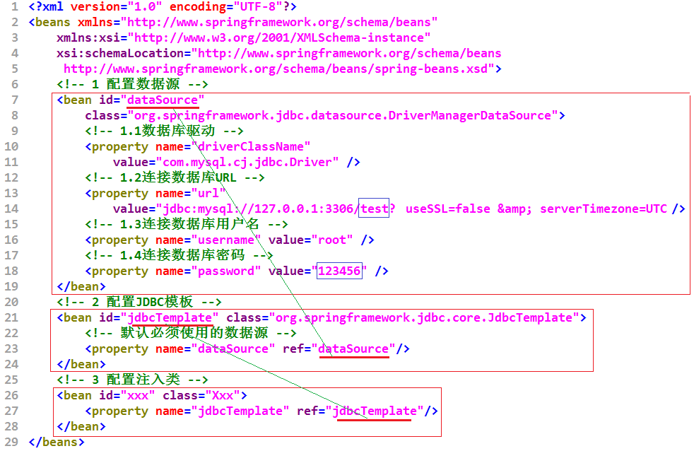
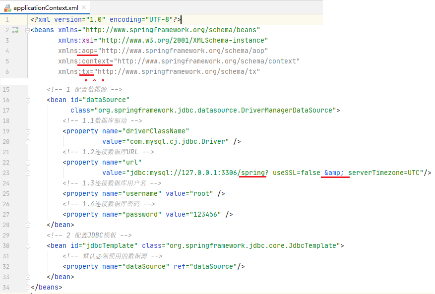
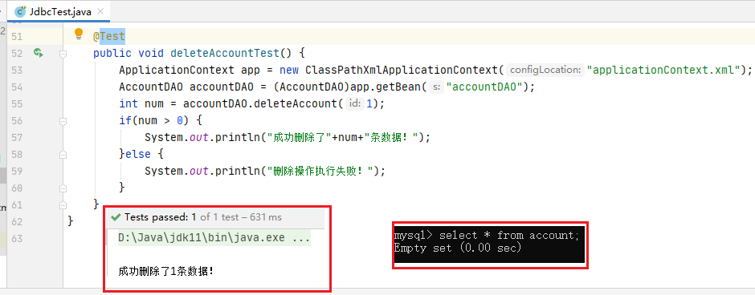
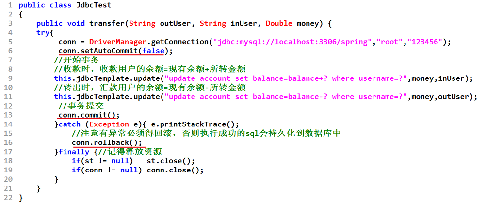

Spring的JDBC模块负责数据资源管理和错误处理，大大简化了开发人员对数据库的操作。
针对数据库的操作，Spring框架提供了JdbcTemplate类（Spring JDBC的核心类）。想要使用Spring JDBC就需要对其进行配置，这个配置工作是在配置文件applicationContext.xml中完成的，其配置模板如下所示。

模板中定义了3个Bean：
☆dataSource：对应类org.springframework.jdbc.datasource.DriverManagerDataSource
☆jdbcTemplate：对应类org.springframeworkjdbc.core.JdbcTemplate
☆需要注入类的Bean：
| 属性名 | 说明 |
| driverClassName | 所使用的驱动名称，对应驱动JAR包中的Driver类 |
| url | 数据源所在URL |
| username | 访问数据库的用户名 |
| password | 访问数据库的密码 |
2.1 execute()方法
2.2 update()方法
2.3 query()方法
execute(String sql)方法能够完成执行SQL语句的功能。下面以创建数据表的SQL语句为例，来演示此方法的使用。
例：execute()方法
(1)在MySQL中，创建一个名为spring的数据库。
(2)在IntelliJ IDEA中，创建一个名为spring02的Maven项目，不选择模板。
配置pom.xml文件，
导入所需要的各种依赖的jar包(spring-jdbc、spring-tx、mysql)。
(3)在src/main/resources目录下创建配置文件 applicationContext.xml。

(4) 在src/main/java目录下创建jmu.jdbc包，包中创建测试类 JdbcTest。
update()方法可以完成插入、更新和删除数据的操作。在JdbcTemplate类中，提供了一系列的update()方法。
| 方法 | 说明 |
| int update(String sql) | 直接执行传入的SQL语句，返回受影响的行数 |
| int update(PreparedStatementCreator psc) | 执行从PreparedStatementCreator返回的语句，返回受影响的行数 |
| int update(String sql,PreparedStatementSetter pss) | 通过PreparedStatementSetter设置SQL语句中的参数，返回受影响的行数 |
| int update(String sql,Object...args) | 使用Object...设置SQL语句中的参数，要求参数不能为NULL，并返回受影响的行数 |
例：update()方法
(1)在项目spring02的 jmu.jdbc包下创建Account类。
(2)在jmu.jdbc包下创建 接口AccountDAO，定义添加、更新、删除账户的方法。
(3)在jmu.jdbc包下创建接口AccountDAO的实现类 AccountDAOImpl。
(4)在applicationContext.xml文件中定义一个id为 accountDAO的Bean，将jdbcTemplate注入到accountDAO实例中。
(5)在测试类JdbcTest中添加测试方法 addAccountTest()。
(6)在测试类JdbcTest中添加测试方法 updateAccountTest()。
(7)在测试类JdbcTest中添加测试方法 deleteAccountTest()。

JdbcTemplate类提供了大量的query()方法来处理各种对数据库表的查询操作。
| 方法 | 说明 |
| List query(String sql,RowMapper rowMapper) | 执行SQL语句，并通过RowMapper返回一个List执行结果 |
| List query(String sql,PreparedStatementSetter pss,RowMapper rowMapper) | 据SQL语句创建PreparedStatement对象，通过RowMapper将结果返回List中 |
| List query(String sql,Object[] obj,RowMapper rowMapper) | 使用Object[]来设置SQL语句中的参数值，采用RowMapper回调方法可以直接返回List类型的数据 |
| List queryForObject(String sql,RowMapper rowMapper,Objec args) | 将args参数绑定到SQL语句中，并通过RowMapper返回一个Object类型的单行记录 |
| List queryForList(String sql,Object[] args,class<T> elementType) | 该方法可以返回多行数据的结果，但必须是返回列表，elementType参数返回的是List元素的类型 |
例：query()方法
(1)向数据表account中插入几条数据。
(2)在AccountDAO中创建通过id查询单个账户的方法 findById(int id)、查询所有账户的方法findAll()。
(3)在AccountDAOImpl中添加findById(int id)和findAll()的具体实现方法。

(4)在测试类JdbcTest中，添加测试方法 findAccountByIdTest()。
(5)在测试类JdbcTest中， 添加测试方法findAllAccountTest()。
RowMapper接口:将数据中的每一行封装成用户定义的类
事务管理是企业级应用程序开发中必不可少的技术, 用来确保数据的完整性和一致性。
事务就是一系列的动作, 它们被当做一个单独的工作单元. 这些动作要么全部完成, 要么全部不起作用。
☆原子性(atomicity): 事务是一个原子操作, 由一系列动作组成. 事务的原子性确保动作要么全部完成要么完全不起作用。
☆一致性(consistency): 一旦所有事务动作完成, 事务就被提交. 数据和资源就处于一种满足业务规则的一致性状态中。
☆隔离性(isolation): 可能有许多事务会同时处理相同的数据, 因此每个事物都应该与其他事务隔离开来, 防止数据损坏。
☆持久性(durability): 一旦事务完成, 无论发生什么系统错误, 它的结果都不应该受到影响. 通常情况下, 事务的结果被写到持久化存储器中。
Spring 既支持编程式事务管理, 也支持声明式的事务管理。
A.编程式事务管理: 将事务管理代码嵌入到业务方法中来控制事务的提交和回滚。在编程式管理事务时, 必须在每个事务操作中包含额外的事务管理代码。

B.声明式事务管理: 大多数情况下比编程式事务管理更好用。 它将事务管理代码从业务方法中分离出来, 以声明的方式来实现事务管理。事务管理作为一种横切关注点, 可以通过 AOP 方法模块化。 Spring 通过 Spring AOP 框架支持声明式事务管理，即spring-tx-RELEASE.jar包需导入。
例：转账功能的实现
(1)项目spring02的pom.xml文件中已有 spring-tx-RELEASE.jar依赖包、 spring-aop-RELEASE.jar依赖包。
(2)在jmu.jdbc包下的接口AccountDAO中增加一个转账方法 transfer()。
(3)在jmu.jdbc 包下的接口AccountDAO实现类AccountDAOImpl中实现transfer()方法。 并添加事务注解。
(4)修改配置文件applicationContext.xml， 添加命名空间并编写事务管理的相关配置代码。
(5)在jmu.jdbc包下的JdbcTest类中添加测试方法transTest()。

(1)在XML配置文件中
A.配置事务管理器class="org.springframework.jdbc.datasource.DataSourceTransactionManager"，还需指明数据源属性<property>
B.注册事务管理器驱动
(2)在需要事务管理的方法中加上事务注解
☆关于Spring 事务管理的传播行为、事务的隔离级别等自学。